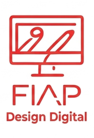

O Design Digital é uma área que combina criatividade e tecnologia para criar experiências visuais em ambientes virtuais. Ele abrange desde a produção de interfaces de aplicativos até a criação de conteúdos multimídia para redes sociais e websites.
Um dos principais objetivos do design digital é tornar a interação do usuário intuitiva e agradável. Isso exige conhecimento em usabilidade, acessibilidade e experiência do usuário (UX).
Além disso, o designer digital precisa dominar ferramentas gráficas e plataformas de edição, como Photoshop, Illustrator e softwares de prototipagem. Essas habilidades permitem transformar ideias em projetos visuais concretos.
O campo também está ligado ao marketing digital, já que o design é essencial para campanhas publicitárias online. Elementos visuais bem elaborados aumentam o engajamento e fortalecem a identidade da marca.
Por fim, o Design Digital é uma profissão em constante evolução, acompanhando tendências como realidade aumentada, realidade virtual e design responsivo. Isso garante que o profissional esteja sempre diante de novos desafios criativos.
Desenvolvimento de UX/UI, Motion Graphics, animação 2D/3D e artes digitais em 3D.
Criação de logotipos, peças gráficas e identidade visual.
Uso de IA generativa para conteúdo em texto, áudio e imagens.
Edição de vídeos com Premiere, After Effects e DaVinci Resolve.
Domínio de fotografia, iluminação e captação de áudio/vídeo.
|Curso anterior| |Página principal| |Próximo curso|